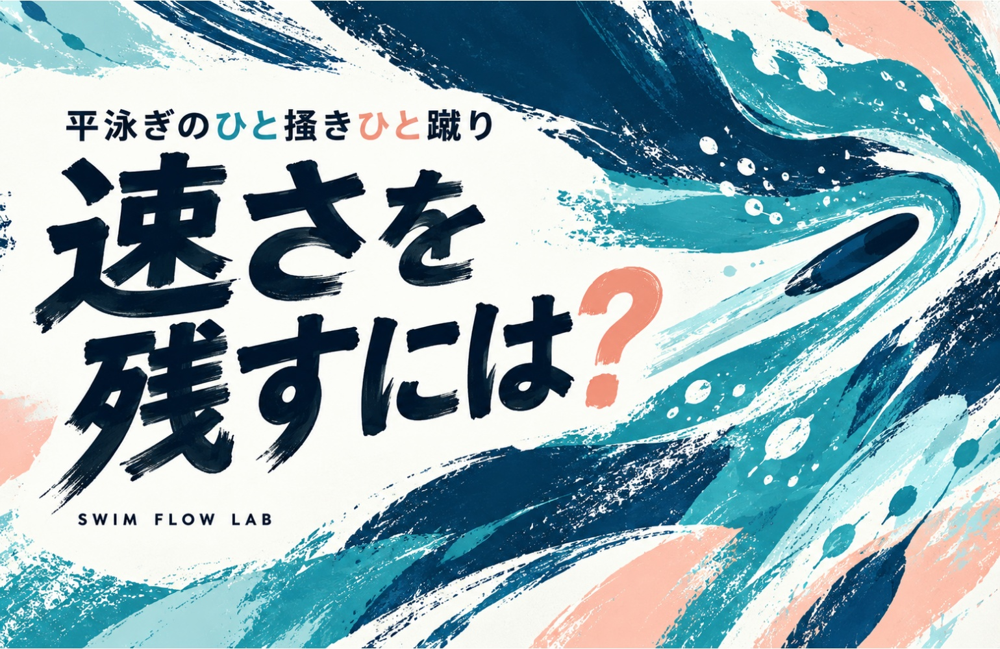
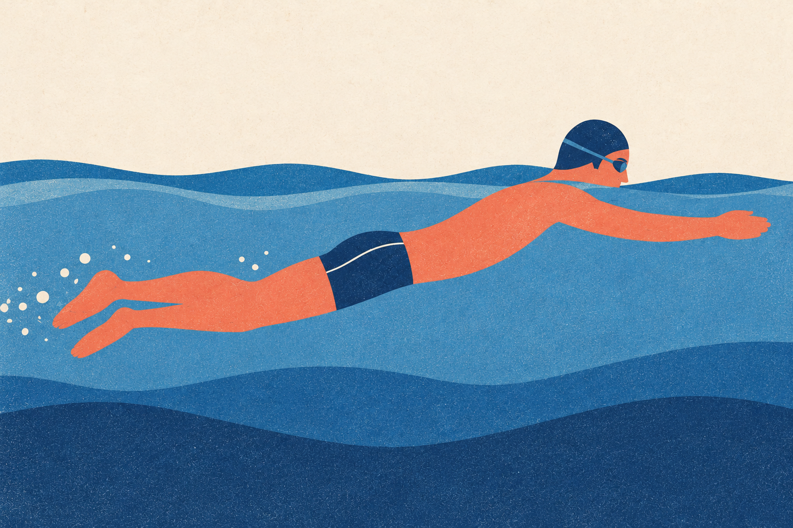
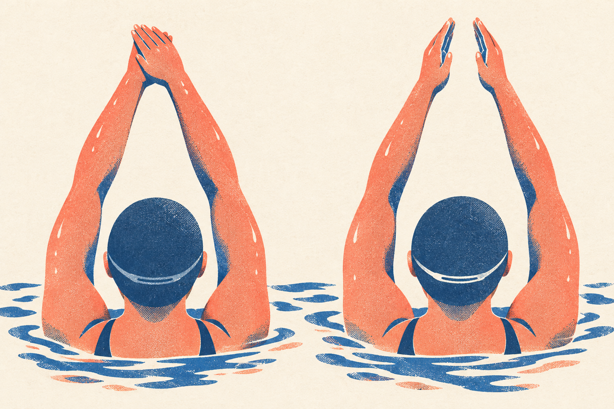
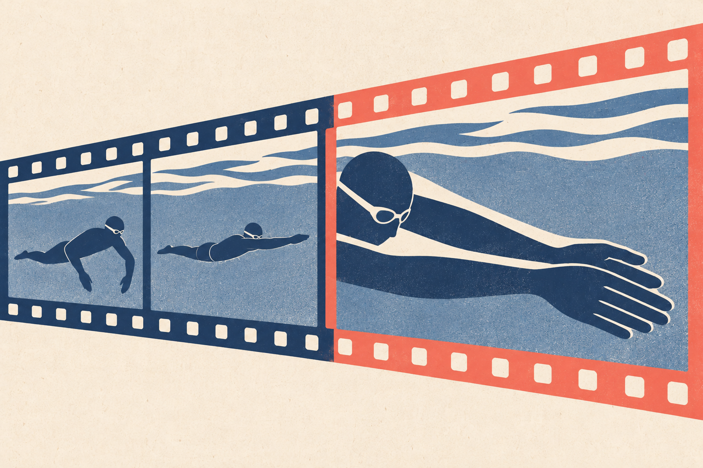
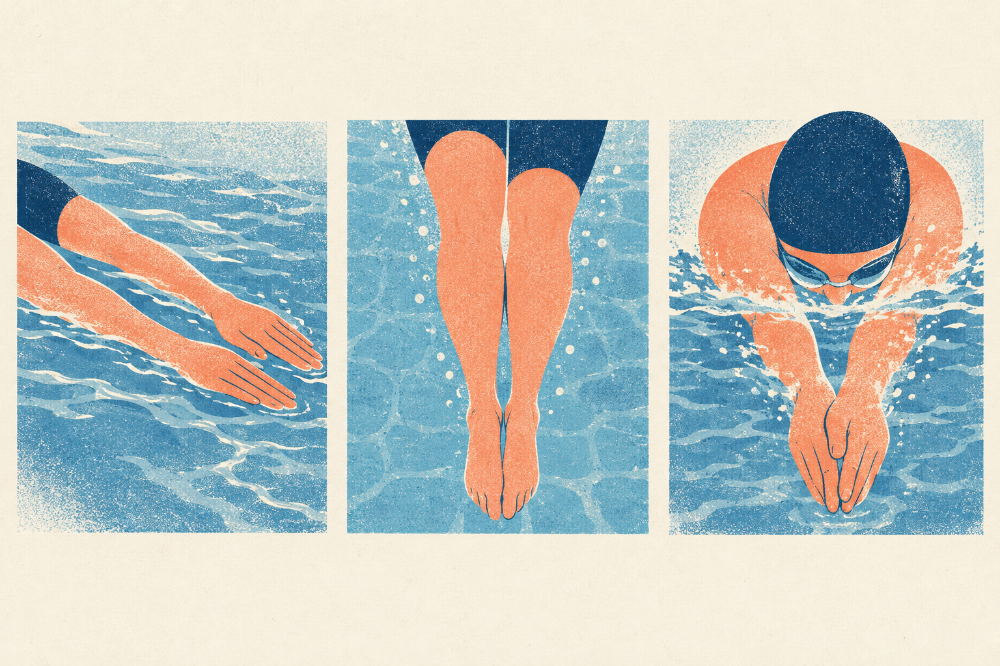
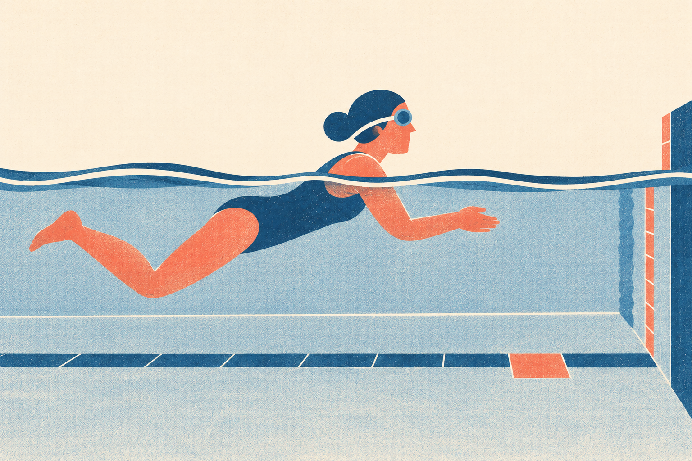
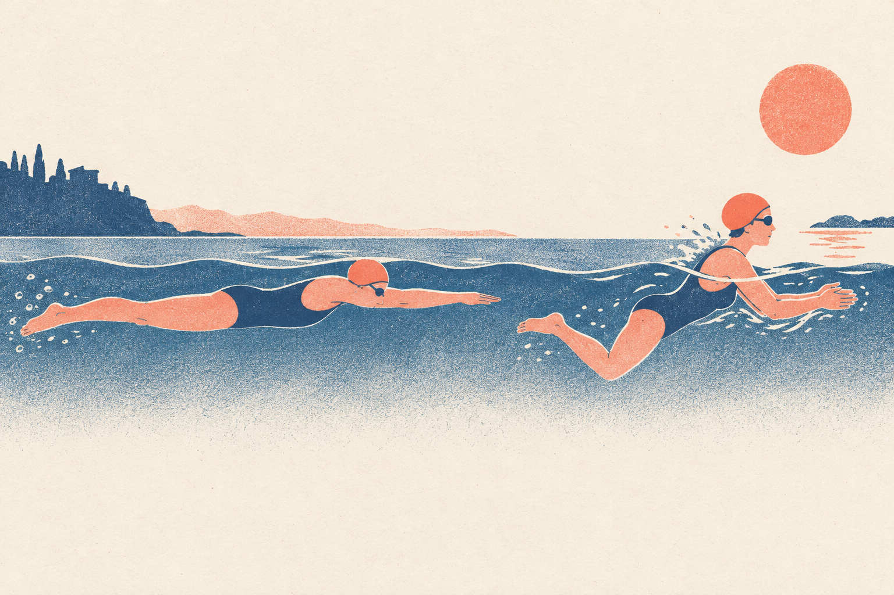

SWIMMING RESEARCH / 03
平泳ぎのひと掻きひと蹴り 速さを残すには？
強く蹴ったあと その勢いを泳ぎ出しへつなぐ

壁を強く蹴り、ひと掻きひと蹴りも頑張った。それなのに、水面に出るころには勢いがなくなっている。もっと強く蹴ろうとすると、今度は力んでしまう。そんなとき、キックの強さ以外に見直せるところはあるのでしょうか。
手がかりになるのは、蹴った瞬間と泳ぎ始める瞬間の間です。力を出す動作を終えたあと、身体はどんな形になり、次のひとかきへどう移っているか。終わり方を比べた計測例を読みながら、自分の動作のどこを変えるとよさそうかを考えます。
この記事で扱うのは、スタートやターンのあとに水中で行うひと掻きひと蹴り、いわゆるプルアウトの終盤です。長く潜ることではなく、水面の泳ぎへ勢いをつなぐことに焦点を当てます。
図で確かめる
今回見るのは、水面の泳ぎへつながる終わりの部分
プルアウトは、壁を蹴ったあとなどに水中で行う動作です。この記事では、その全部を一度に変えず、最後の平泳ぎのキックから水面の泳ぎへつながる部分に注目します。
ドルフィンキック・腕の引きなど
1 蹴った直後に速くても泳ぎ出しで遅れたら？
キックを強くしたかどうかは、自分でも感じ取りやすいものです。一方、その勢いがどこまで残ったかは、力の感覚だけでは分かりません。『よく蹴れた』のに同じ地点へ着くのは遅い、ということも考えられます。そこで、キックの終わりをゴールにせず、最初の泳ぎへ移るところまでを一つの動作として見ます。

例えば、蹴り終わった形をきれいに作ろうとして、その姿勢のまま長く待ったとします。見た目は整っても、次のひとかきが遅れれば、思ったほど前へ進めないかもしれません。逆に、泳ぎ出すことだけを急ぐと、蹴り終わりがどうなっていたかを見落とします。『形』と『つながり』を一緒に考えたい理由です。
確かめたいのは、強く動けたかより、その動きのあとも進めているかです。この区別をしておくと、キックを強める以外の改善の入口が見えてきます。次に、その終わり方を実際に比べた事例を見てみましょう。
2 終わりの姿勢が違うと減速も違った
査読論文ではなく、コーチであるThe Race ClubのGary Hall Sr.が公開した計測事例では、エリート泳者Aaron Greenbergさん1人が二つの終わり方を比べました。キック後の速度低下は、同クラブが「ハイパーストリームライン」と呼ぶ姿勢で34％、「レーシングストリームライン」で40％でした。測定区間は最後のキック直前の速度の谷から、キックによる最高速度の0.5秒後までです。［1］
図で確かめる
小さいのは「速度が減った割合」
34％と40％は、蹴ったあとの速度の低下について報告された値です。差は40−34＝6ポイント。34％の条件でタイムが6％短くなった、という意味ではありません。
コーチによる泳者1人の事例（査読論文ではありません）／報告された速度低下率
40％ − 34％ ＝ 6ポイントの差
棒が長いほど、速度が多く減った報告です。速さの実数や残った速度は示していません。

二つとも腕を前へ伸ばす姿勢ですが、手と腕の置き方が違います。ハイパーは手を重ね、腕を頭の後ろ側へ置いて肩を大きく伸ばす形。レーシングは手を少し離し、手のひら同士を向けて前へ伸ばす形として同クラブは説明しています。［1］［3］ この例では前者の速度低下が6ポイント小さく、終わりの形まで比べる意味が見えます。ただし、全員のタイムが6％よくなる結果ではなく、肩や首の動きやすさが違う人へ独自の姿勢をそのまま勧めることもできません。
図で確かめる
0.5秒は、最高速度になった時点から数える
測定区間の説明には、「最後のキック直前の速度の谷」と「キックによる最高速度」が出てきます。0.5秒後の基準になるのは、後者の最高速度になった時点です。
速度の谷
最高速度の時点
比較したのは、手と腕の置き方
The Race Clubによる姿勢の説明
手を重ねる 腕を頭の後ろへ 肩を大きく伸ばす
手を少し離す 手のひらを向かい合わせ 前へ伸ばす
自分では形を無理に作らず、蹴り終わりから泳ぎ出しまでのつながりを見ます。
自分の練習へ持ち帰るなら、姿勢の名前をまねるより、蹴り終わりに腕と脚を伸ばした形へ無理なく戻れているかを確かめます。形を作るために力んで止まるのではなく、その形から普段の泳ぎ出しへ移れるか。ここから先は、計測例を手がかりにした本記事の練習への提案です。
3 有名選手の順序へ全部替える必要はある？
終わり方を見直そうとすると、『そもそもドルフィンキックを入れる順序が違うのでは』と気になるかもしれません。ここは一度、分けて考えましょう。前半の順序と、最後の平泳ぎのキックから泳ぎへ移る動作を同時に変えると、何がよかったのかを確かめにくくなります。

国際大会の選手60人、150レース出場分を分析した研究では、前半を三つの型に分けました。①ドルフィンキックを終えてから腕を引く型 ②キックの途中で腕を引き始める型 ③脚の動作より先に腕を引き始め、キックが終わる前に腕を体側まで引き終える型です。③は、腕がキックより先に始まる点で②と区別されます。多くの比較では成績の有意差が確認されず、女子100mのターンには例外がありました。よく使われる型が誰にでも最速とは決まりません。［2］
図で確かめる
腕と脚の「始める・終える」を分けて見る
②と③は、どちらも腕と脚の動作が重なる時間があります。区別する手がかりは、どちらを先に始めるかです。①はキックを終えてから腕、②はキックを始めてから腕、③は腕を先に始めます。
左から右へ時間が進む →／帯の長さは実測秒数ではありません
① キックが終わってから腕
② キックの途中で腕を始める
腕を始める時点で、キックはまだ途中です。腕の終了位置は模式です。
③ 腕を先に始める
腕を始める → キックを始める。腕を体側まで引き終えるのは、キックが終わる前です。
この研究は大会の動作を調べたもので、特定の型へ替える練習の効果を試したものではありません。今の悩みが『蹴ったあとの勢いが消える』なら、まず終盤の一項目を変えるところから始めてみます。前半の順序まで直したい場合は、別の課題として指導者と取り組むほうが、変更の意味を追いやすくなります。
人数とレース数を分ける
60人は選手の人数、150はレース出場を数えた数です。同じ選手の複数の出場も含むので、「150人を調べた」という意味ではありません。また、多くの比較で有意差がないことは、どの型も全員に同じ効果があると証明したことではありません。
4 直す場所は一枚の姿勢より前後の動きで探す
ここからは、資料を踏まえて本記事が提案する観察方法です。横からの映像を撮れるなら、平泳ぎのキックから最初の泳ぎまでを通して見てください。腕が前へ戻る、脚が伸びてまとまる、水面の泳ぎへ移る。この流れの中で、自分が「伸びた」と思っている瞬間と、実際に形がまとまる瞬間が合っているかを確かめます。

静止画より、前後の動きを見る
終盤を続けて観察する
無理なく戻れているか
腕の戻りとどう重なるか
形を作るために待っていないか
例えば、脚がまとまったあとも腕を前へ戻す途中だったなら、見る項目は腕の戻りです。次の試行では、腕を前へ戻して伸びるところまでを、ひと続きの動作として意識します。ただし、腕を急いで戻すのか、ほかの動作とのタイミングを見直すのかは、前後の映像を見て指導者と選びます。全員へ同じ順序を指定するのではありません。
すでに形がまとまっているのに、そのあとで長く待っているなら、さらに姿勢を固めることを課題にしなくてよいでしょう。待つ間と泳ぎ始めるタイミングを見直します。また、頭が上がること自体は悪い動作ではありません。浮き上がりや呼吸へ移るために必要な動きもあるので、『頭を上げない』と固定せず、いつ何のために動いたかを見ます。
気になる場面から、確認する点へ
前後の動きを通して見る
- 脚がまとまっても腕が戻る途中
- 腕の戻りと他の動作のタイミングを見る
- 形は整うが長く待つ
- 姿勢を固めるより、泳ぎ出す時機を確認
- 頭が持ち上がっている
- 呼吸や浮上に必要かを確認。固定しない
- 自然につながり困り事もない
- 理想の静止画に合わせるためだけに変えない
撮影できなければ、指導者に終盤の一項目だけを見てもらっても構いません。大切なのは、気になる場面を一つ選び、何を確かめるか決めることです。すでにつながっているところを、理想の静止画に合わせるためだけに変える必要はありません。
5 一つ変えたら同じ地点まで泳いで比べる
まず普段のひと掻きひと蹴りを行い、次は前章で選んだ一項目だけを意識します。キックの強さを増やさず、終わりの形からいつもの水面の泳ぎへつなげます。形を確認するために止まったり、潜る距離を伸ばしたりはしません。安全にプルアウトができる人が、指導者の見守りのもとで試す比較です。

比べる終点は、普段の浮き上がりと最初の泳ぎを含められる、同じ目印に決めます。例えば、その位置にあるプール底のタイルの継ぎ目や、施設で使える距離の目印です。頭がそこを通るまでと決めたら毎回頭で測り、目印へ届くために潜り続けないようにします。壁を蹴る強さや途中の動作をそろえ、十分に休んで比べてください。記録は「同じ地点までの時間」「変えた一項目」「力みや苦しさ」で十分です。
図で確かめる
同じ目印を、同じ身体の部分で通り比べる
終点の目印だけでなく、何を通過の合図にするかもそろえます。1回目は頭、2回目は指先では、比べる終わり方が変わってしまいます。時計を動かし始める合図も、両方で同じにします。
ここで
計時終了
始める合図も同じに。目印のために潜り続けません。
終盤の一項目だけを比べる
指導者の見守りのもとで
いつもの動作と時間を見る
キックの強さは増やさない
到着時間と力みを見る
目印へ届くために潜り続けず、普段の浮き上がりと泳ぎを含めて比べます。
同じ地点へ早く着き、力みも増えないなら、その変更は次回も試す候補です。見た目が整っても遅くなったなら、姿勢を作るために待つ時間が増えていなかったかを確認します。増えていたら、次は姿勢を確認して止まる動作を足さず、普段の泳ぎ出しのタイミングへ戻して比べます。変化が分からなければ、さらに強く意識する前に普段の動作へ戻し、変更が実際にできていたかを指導者と確かめます。
きれいに見えた。その先は早く着いた？
同じ目印・同じ身体部位で比較
- 早く着き力みも増えない
- 次回も試す候補にする
- 形は整ったが遅い
- 待ちすぎていないか、泳ぎ出す時機を確認
- 違いが分からない
- 意識を強めず、実際に変わった点を確認
- 痛みや息苦しさが出る
- その試行を止める。形の維持を優先しない
一回の小さなタイム差で、ずっと使う泳ぎ方を決める必要はありません。慣れない動作の影響や手動計時のずれもあるので、別の機会にも比べます。うまくいかなかった変更を永久に不採用にするのではなく、その場で無理に強めず、次に確かめる課題として残すということです。痛みや息苦しさが出たら、その試行は止めます。
6 力を足す前に終わり方を泳ぎへつなぐ
ひと掻きひと蹴りの勢いが残らないとき、次の課題を必ず『もっと強く』にする必要はありません。蹴り終わりに形が戻るところから、水面の泳ぎへ移るところまで。その間に見つけた一項目を変える方法もあります。

今回の資料から、全員に共通する姿勢や動作の順序までは決まりません。それでも、何を試すかは具体化できます。自分の終盤で一つ見直し、形を作るためだけに待たずにつなぎ、同じ地点までの結果で確かめる。キックの頑張りだけでなく、その先へ進めたかを判断の材料にしてみてください。
力を足す前に、つなぎ方を確かめる
次の練習へ持ち帰る3点
- 一項目を選ぶ
自分の終盤で気になる場面から
- 待たずにつなぐ
形を作るためだけに止まらない
- 同じ地点で比べる
その先へ進めたかを確かめる
参考資料と確認範囲
- Gary Hall Sr.／The Race Club How to Finish your Breaststroke Pullout
公式記事の本文・掲載計測表を確認 コーチ資料であり査読論文ではない 動画本編は未確認 - McCabeら（2022）The characteristics of the breaststroke pullout in elite swimming
原著の方法・結果・考察を確認 女子100mターンの例外を本文に反映 - The Race Club TRC Main Set – Breaststroke: Finding Your Line
公式本文のレーシングストリームラインの手の向き・間隔の説明を確認 練習メニューは転載・採用していない
図は本文の理解を助ける独自の模式図です 論文の測定図や実験画像の転載ではありません